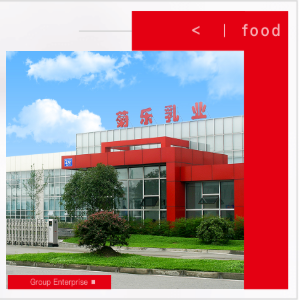

集团简介
Company Profile

四川菊乐食品股份有限公司
成都菊乐企业（集团）股份有限公司旗下子公司，前身为四川菊乐食品有限公司。
1996年进入乳制品行业，历经20多年稳健发展，打造出集合奶源基地、研发生产、及市场销售的完整乳业产业链，成为西南地区最大的知名乳制品生产及销售企业之一。“菊乐”牌牛奶产品引领创新，深入人心；打造了引领中国谷物奶的黑红牛奶，获得中日双重批准的发明专利“无杂菌酸奶制作技术”，连续畅销20多年的“酸乐奶”等。坚守品质，不断创新，是菊乐产品及品牌生命力的持续保证。以关爱消费者健康和坚持产业链共赢为企业担当，“菊乐” 牛奶成为消费者喜爱和信任的乳业品牌，菊乐企业被业界合作伙伴广泛认同。